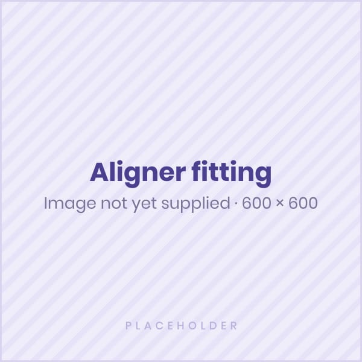
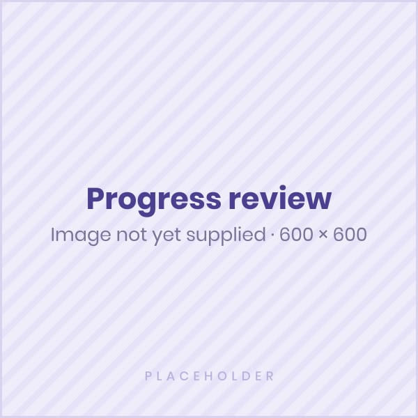
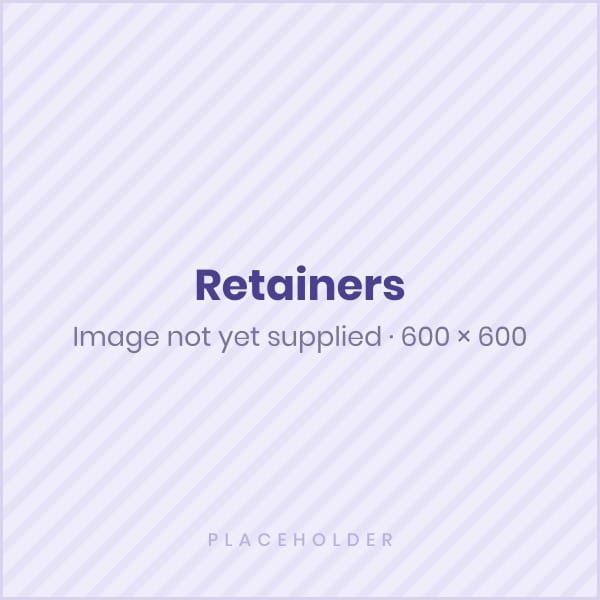

Wear time
Follow the daily wear time your clinician recommends — consistency supports planned movement.
Seven clear steps
Clear aligner treatment follows a planned sequence of removable trays, each designed to guide gradual tooth movement. Here is what the journey usually looks like at Danthaja.
We examine your teeth, bite, oral health, and goals.
Accurate records are taken to create your treatment plan.
Your aligner sequence is planned to guide gradual tooth movement.
You receive your first trays with instructions on wear and care.

Aligners are usually worn most of the day and removed for eating, brushing, and flossing.
Your clinician checks progress and makes adjustments if needed.

After treatment, retainers help maintain your new smile position.

Living with aligners
Follow the daily wear time your clinician recommends — consistency supports planned movement.
Remove trays for meals and drinks other than water.
Brush and floss before putting trays back in, and rinse aligners gently.
Progress reviews help your clinician make adjustments where needed.